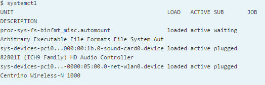

[+] CENTOS
- $ systemctl
- $ systemctl list-units -t service --all
- $ systemctl list-units -t service
- $ systemctl status cman.service
- $ systemctl status sshd.service
- # systemctl start sshd.service
- # systemctl enable sshd.service
- # systemctl disable sshd.service
- $ systemctl is-enabled sshd.service; echo $?



[+] Ubuntu - Kali
- rcconf
- sysv-rc-conf
- update-rc.d ssh enable
[+] Add service on CentOS 6
Copy service service_name file to /etc/init.d/
Then do the following commands
# chkconfig --add service_name
# chkconfig service_name on
# service service_name start
# chkconfig --level 345 service_name on
END